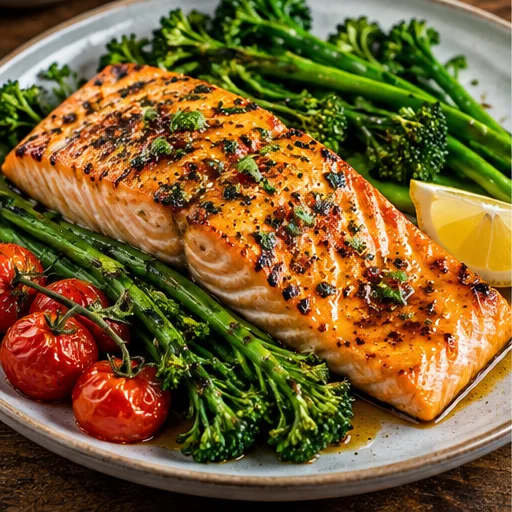
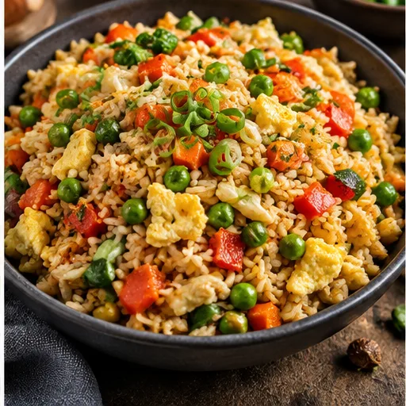
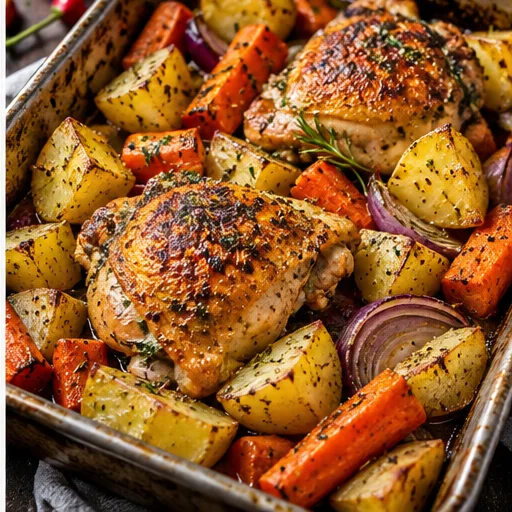

A calmer way to plan delicious meals, shop smarter and organise your week.
Good food. Less planning. More time for life. Your plans stay on this device.
YOUR WEEK, MADE EASIER
Tasty meals. Less hassle.
Plan, shop and cook delicious meals for the whole week.

New here? Tap Start meal planning, choose your household size and generate a week. Your plan saves on this device.
🌍 Special Days & Celebrations
Explore seasonal meals and celebrations from around the world.
Your week at a glance
Saved on this device
Everything you need, in one place
Popular this week
Recipe prices and nutrition are estimates, not verified supermarket prices. Always check ingredients and labels for allergens.
SPECIAL DAYS SORTED
🌍 Special Days & Celebrations
Discover dishes associated with celebrations around the world, using ingredients commonly available in UK supermarkets. Dates of some celebrations change each year.
Food pictures are AI-generated illustrations, not photographs of tested recipes. Recipes are simplified home-cooking interpretations, not definitive representations of a culture. Prices, times and availability are estimates. Check ingredients and labels for allergens; cooking instructions are not independently tested.
MEALS SORTED
Plan your whole week
Breakfast, lunch and dinner together for each day. Choose 0–12 people separately for every meal; 0 means eating out or skipping.
This is separate from your dinner-only target above. Prices are rough recipe estimates, not a supermarket checkout prediction.
Allergy warning: ingredient exclusions are keyword-based and cannot identify hidden ingredients or cross-contact. Always check every product label and seek professional advice for severe allergies.
Creates seven dinners and, when selected, breakfasts and lunches. Budget is a target based on approximate recipe costs, not a guaranteed shopping total. Your current plan will be replaced only after confirmation.
Breakfast and lunch are optional. Your dinner budget and cost estimate cover dinners only; additional meals cost extra.
❤️ Family favourites & ratings
RECIPES SORTED
Find your next favourite
Search the dinner library, check ingredients and explore cooking methods.
🥕 Cook with what you've got
Type ingredients you have, separated by commas, or use your saved cupboard ingredients. We'll show which dinners need the fewest extra ingredients.
Matches are based on ingredient names, not quantities. Check that you have enough of each ingredient and verify allergens and labels.
Explore our growing dinner collection · V51
Find something you’ll love. Filter, save and scale any recipe for your table.
THE EVERYDAY SORTED KITCHEN
Meals worth looking forward to
Restaurant-style food photography to inspire your next meal.


Illustrative AI-generated food imagery. Some recipe photos show similar dishes and may not exactly match ingredients.
SHOPPING SORTED
Your shopping list
🏠 Have something already? Tap 🏠 I already have this beside an ingredient only if you have it. It then moves to your cupboard section and stays off the shopping list. Tap Need to buy to undo.
One complete list for all your planned meals. Where helpful, example supermarket pack sizes appear beneath the ingredient. Tap “Why do I need this?” to see which meals need it. Pack sizes are suggestions, not verified store products.
➕ Add anything to your shopping list
Milk, toiletries, pet food or anything else you need. These stay saved on this device alongside your meal ingredients.
Added items appear in your main shopping list below.
MORE SORTED
More ways to get organised
Your existing money planner and weekly tasks are still here.
🔒 Keep your meal plans safe
Your plans are saved on this device. Back up your data before changing phones, clearing browser data or reinstalling. Safari and the Home Screen app may keep separate copies.
Saved on this device · Backups are optional
Restoring replaces this app's current plan, shopping ticks, favourites and tasks. Back up the current data first.
💚 Help improve Everyday Sorted
Trying the free early-access version? Tell us what you love, what feels confusing, or if something is not working.
Please don't include passwords, addresses, health details or other sensitive information. Feedback is processed by Formspree so we can review it.
📄 Important information
Read how this beta works, what information is collected, and the limits of recipe and budget estimates.
A simple monthly household budget. Enter your own numbers.
Planning tool only; not financial advice. Figures are not shared with us.
WEEK SORTED
Get organised
Add tasks for your week and tick them off as you go.
About Everyday Sorted
Free to use · No account required
Everyday Sorted helps you plan breakfast, lunch and dinner, adjust portions for each meal and turn your plan into one organised shopping list.
Getting started
Open Planner, choose your household size and generate your week. Change the number of people for individual meals, then open Shopping to review your ingredients. Use More → Back up my data to save a copy of your plan.
Your data and privacy
Your meal plans, favourites, shopping ticks and task information are saved in this browser or installed app on your device using local storage. This version does not require an account or send that saved plan to an Everyday Sorted account. Different browsers, devices and Home Screen installations may have separate saved data. Clearing website data or removing the app may delete it. You can export a backup from More and restore it later. This description covers the app’s own storage, not necessarily the data collected by hosting or browser providers. Avoid entering sensitive financial information.
Recipes, allergens and estimates
Recipes and cooking guidance have not been independently tested or professionally verified. Always check ingredients, packaging, allergens, food storage and safe cooking temperatures. Dietary avoid-filters use simple ingredient matching and are not safe to rely on for food allergies. Costs, nutrition, cooking times and supermarket pack suggestions are estimates, not live retailer prices or lab-tested values. Some food images are illustrative and may not match the finished recipe. Meal suggestions are rule-based rather than personalised AI advice.
Everyday Sorted is an early public beta. Please check the details before cooking or shopping.
New update availableUpdate without losing your saved plan